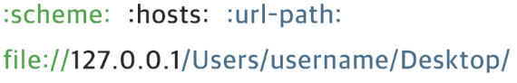
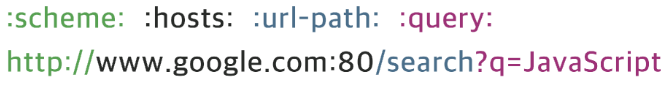

URL(Uniform Resource Locator)은 네트워크 상에서 웹 페이지, 이미지, 동영상 등의 파일이 위치한 정보를 나타낸다.
URL은 scheme, hosts, url-path로 구분할 수 있다.

scheme는 통신 방식(프로토콜)을 결정한다.
일반적인 웹 브라우저에서는 http 또는 https를 사용한다.
hosts는 웹 서버의 이름이나 도메인, IP를 사용하며 주소를 나타낸다.
url-path는 웹 서버에서 지정한 루트 디렉토리부터 시작하여 웹 페이지, 이미지, 동영상 등이 위치한 경로와 파일명을 타나낸다.
URI(Uniform Resource Identifier)는 URL의 기본 요소인 scheme, hosts, url-path에 더해 query를 포함한다.

query는 웹 서버에 보내는 추가적인 질문으로 query를 사용하기 위해 ? 와 & 기호를 사용한다.
IP(Internet Protocol)는 인터넷상에서 사용하는 주소체계를 의미한다.
IPv4(Internet Protocol version 4)는 IP 주소체계의 네 번째 버전을 뜻하며 네 덩이의 숫자로 구분된다.
각 덩어리마다 0 ~ 255 까지 나타낼 수 있다.
PORT는 IP 주소 끝 콜론(:) 다음에 오는 숫자로 IP 주소에 진입할 수 있는 정해진 통로를 의미한다.
PORT 번호는 0 ~ 65,535 까지 사용할 수 있으며 그 중에서 0 ~ 1024 까지의 PORT 번호는 주요 통신을 위한 규약에 따라 이미 정해져 있다.
이미 사용 중인 PORT는 중복해서 사용할 수 없으며 잘 알려진 PORT의 경우 URI 등에 명시하지 않지만 그 외의 잘 알려지지 않은 PORT는 반드시 포함해야 한다.
잘 알려진 PORT 번호로는 80번 HTTP, 443번 HTTPS, 22번 SSH 등이 있다.
도메인(Domain)은 웹 브라우저를 통해 특정 사이트에 진입할 때 IP 주소를 대신하여 사용하는 주소를 의미한다.
DNS(Domain Name System)는 호스트의 도메인 이름을 IP 주소로 변환하거나 반대의 경우를 수행할 수 있도록 개발된 데이터베이스 시스템이다.